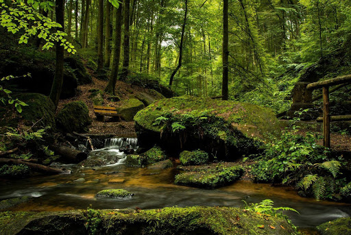

Az erdő olyan természetes vagy telepített élőhely, amelynek jellegét a sűrűn álló fák határozzák meg. Az erdők a Föld talán legkomplexebb életközösségei, amelyben egyaránt megtaláljuk a talajban élő mikroorganizmusokat, a földfelszínen élő mohákat, gombákat, lágy- és fás szárú növényeket. Állatvilága többnyire rendkívül gazdag, hosszú táplálékláncokkal. Az erdei növényzet jellemző szintjei: lombkoronaszint(ek) — a mérsékelt égövi erdőkben jellemzően egy vagy kettő; cserjeszint — a mérsékelt égövi erdőkben jellemzően egy; gyepszint — a mérsékelt égövi erdőkben jellemzően egy; moha-és zuzmószint, gyökérszint, folyondárszint — a mérsékelt égövön jellemzően a galériaerdőkben, epifitonszint — jellemzően a trópusi esőerdőkben. Az erdők különböző formáit a trópusokon és a mérsékelt övben a magashegyek erdőhatáráig megtaláljuk mindenütt, ahol a fák növekedéséhez elég a csapadék és az erdőket az ember nem irtotta ki.  Az erdőben környezet számos paramétere (megvilágítás, hőmérséklet, páratartalom, talajnedvesség stb.) jelentősen eltér az azon kívüli területekétől (Wohlleben, 2015), ezért jellemző életközössége csak megfelelő méretű fás területen tartható fenn. Ezért nem nevezzük erdőnek: a magányos fákat, a néhány, illetve pár tucat fából álló facsoportokat, a fátlan növénytársulásokban szigetszerűen előforduló ligeteket, a fasorokat, az alig néhány fa széles erdősávokat stb. A Magyarországon használatos területi beosztás szerint az erdő minimális területe 0,5 ha (Erdőgazdálkodási, 1964). Jogi értelemben az erdő a termőföld egyik művelési ága.
Az őserdő emberi beavatkozás nélkül újul meg. Magyarországon nincs olyan terület, ahol ne lett volna valaha valamilyen erdőgazdálkodás; itt őserdőknek azokat az erdőket nevezzük, amelyek növekedésébe legalább 150 éve nem avatkozott be az ember. A szálerdő magról, csemetéről vagy dugványról, ritkán a valamilyen erdőkár miatt fiatalon visszavágott fák sarjairól ered. Ezen belül: csemetés az ember magasságát még el nem ért erdősítés; újulat a természetes úton (az idős fák elhullatott magjaiból) kikelt és az ember magasságát még el nem ért fiatal erdő. A jól tervezett szálerdő telepítése, gondozása és felújítása egyaránt komoly szakértelmet igényel és meglehetősen költséges. Fái eleinte lassan nőnek, ennek eredményeként évgyűrűik sűrűek, törzsük keresztmetszete a körhöz közeli. Többnyire egymáshoz közel állnak, tehát törzsük viszonylag hosszú, egyenes, hengeres és ágtiszta. A gyökérzet és a lomb is arányosan fejlődik. Az ilyen erdő korán feltisztul, ezért viszonylag kevés az olyan, korhadó ággörcs, amelyen át a fertőzések könnyen támadhatnak. A magról eredt fák ezeket a gazdasági szempontból előnyös tulajdonságaikat egészen idős korukig megtartják; legtöbb fajuk optimális vágásfordulója száz évnél hosszabb. A szálerdő sűrűsége tervezhető úgy, hogy a talaj árnyalása mindig megfelelő legyen. A sarjerdő a fák kivágása után visszamaradt tuskókról, gyökerekről, esetleg törzsrészekről ered, ezért telepítése olcsó. A sarjak kezdetben gyorsan nőnek, ezért évgyűrűik szélesek, azok alakja a kerektől jelentősen eltérhet. A fa szövetei lazák, anyaga viszonylag puha. Bár a visszamaradt tuskók egymástól viszonylag távol állnak, de egy-egy tuskóról sarjak tömege fakadhat. A fenti okok együttes hatására a sarjak gyakran girbegurbák és sűrűn elágazóak lesznek. A törzsek a szél nyomására vagy az ágakra rakódó hó súlya alatt könnyen törnek. A tuskón és a korhadó ághelyeken át a sarjakat könnyen megtámadhatják a fertőző gombák. A tuskók elvénülése a sarjak növekedésének ütemét erősen csökkenti. A sarjerdők fája általában csak tűzifának jó. Vágásfordulójuk többnyire 10–40 év, tehát ezekben a (tar)vágás negatív hatásai is gyakoribbak. Az egyenetlen, nagy térközökkel, de csoportosan növekvő sarjak szinte sosem árnyékolják megfelelően a talajt, amit a szél is jobban szárít, mivel a rövidebb vágásforduló miatt a fák átlagos életkora kevesebb (Erdőgazdálkodási, 1964). A vágásforduló azért nem hosszabbítható, mert a fák egészsége a kezdeti gyors növekedés után leromlik; ettől értelemszerűen növekedésük is erősen lelassul.